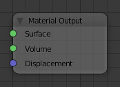

Material Node¶

Material Node.
The Material Output node is used to output surface material information to a surface object.
Inputs¶
- Surface
- Shading for the surface of the object.
- Volume
Shading for the volume inside the object.
See also
The types of volume shaders are:
- Emission shader.
- Volume Absorption shader.
- Volume Scatter shader.
- Displacement
- Used to create bump mapping or actual subdivided displacement.
Properties¶
This node has no properties.
Outputs¶
This node has no outputs.